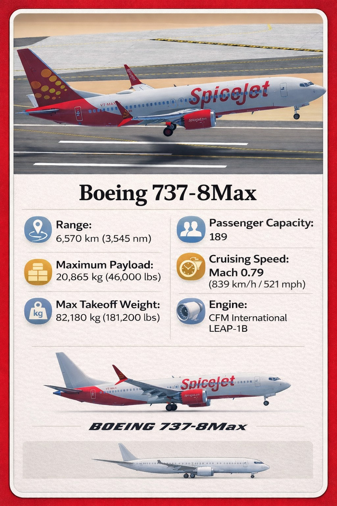
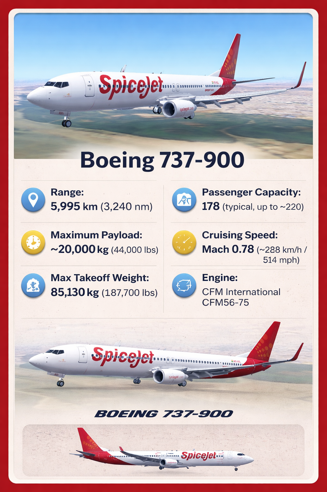
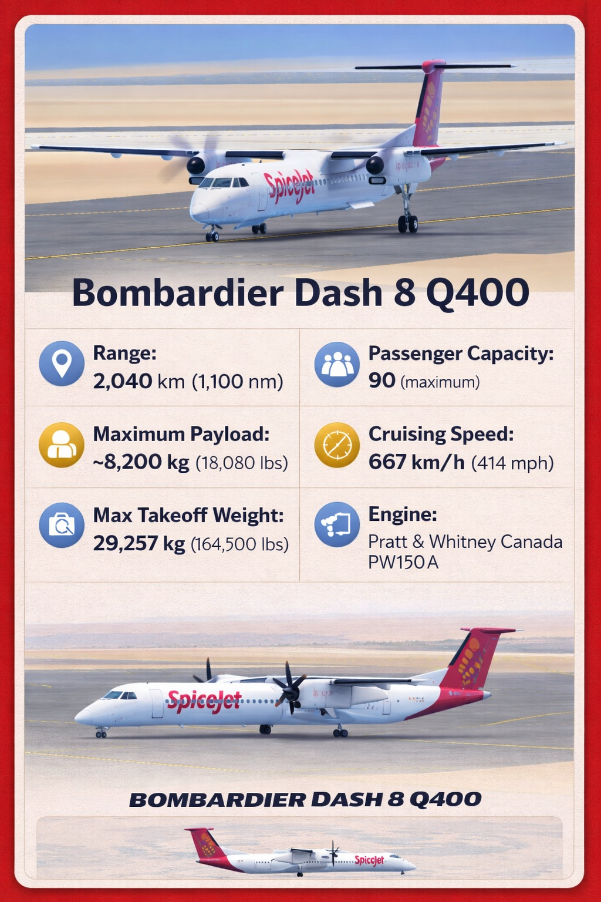

Our fleet represents a perfect blend of efficiency, reliability, and modern aviation technology. From domestic routes to international operations, each aircraft is selected to provide realism and performance. Fly a variety of modern aircraft inspired by real-world SpiceJet operations and experience aviation like never before.



Explore our main hub airport and a wide network of destinations across India and beyond. Plan your routes and enjoy realistic airline operations.